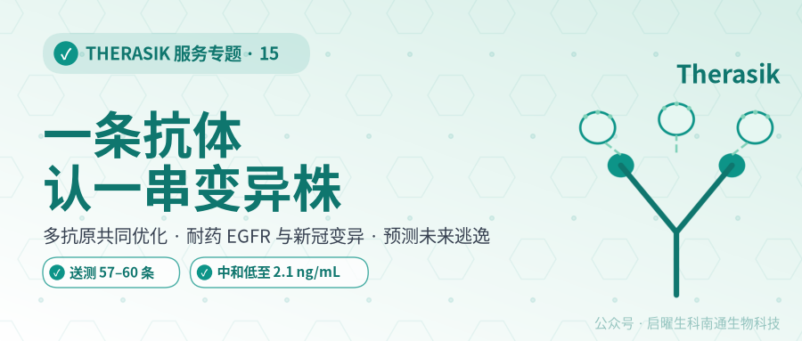
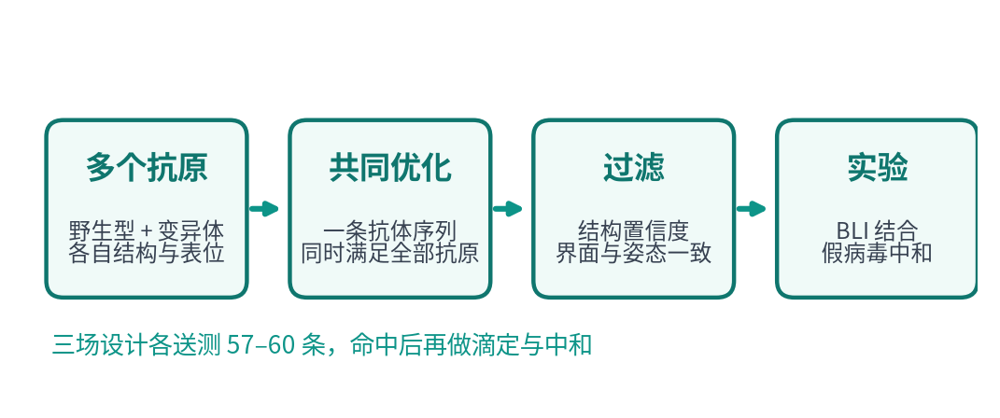
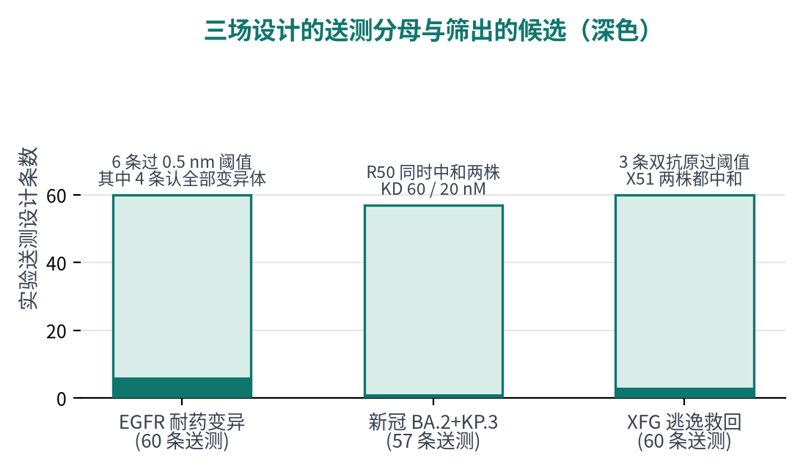

THERASIK 服务专题 · 15

抗体最怕的往往不是靶点难结合，而是靶点会变。结直肠癌里 EGFR 胞外域的耐药突变会让西妥昔单抗失效，新冠刺突蛋白更是一波波淘汰掉获批中和抗体。常规做法是做抗体鸡尾酒、或者重新筛一轮，成本都不低。2026 年 11 月中旬的一篇预印本换了个思路：在计算设计阶段就把「同一条抗体要认好几个抗原版本」写进优化目标，让一条序列同时对上野生型和变异体。
一条抗体序列对多个抗原版本共同优化，每场只送测 57–60 条设计，就拿到了能认全部六个 EGFR 耐药变异的抗体，以及同时中和两株抗原性迥异新冠变异株的抗体。
这套流程叫 Germinal Multi，建立在作者此前的单靶点抗体设计流程之上。改动集中在三处：设计阶段对每个抗原分别算一次结构预测置信度、再把梯度合起来；序列设计阶段用多状态的 AbMPNN，从「分别以各抗原为条件」的分布的几何平均里采样，保证解码出同一条序列；过滤阶段则要求每个抗原都通过阈值，而且结合姿态彼此一致。抗体骨架统一用曲妥珠单抗框架，六段 CDR 全部重新设计。
除了从头设计，流程还有一个「救回」模式：从已有抗体序列出发，在 CDR 每个位点上对亲本残基加一个软偏置，并把亲本复合物结构作为模板喂给结构预测，让设计尽量保住原来的结合姿态，只在必须改的地方改。这一模式用于把一条已有的广谱中和抗体改造成还能打逃逸变异体。

▲ 多抗原共同优化：一条序列，多个抗原同时过关
第一场针对 EGFR。作者挑了域 III 上六个与临床或临床前耐药相关的替换（R451C、S464L、G465R、K467T、I491M、S492R），没有把六个变异体各列一个靶点，而是把六处替换合成一个「挑战」抗原，与野生型一起共同优化，生成 60 条候选。在 1000 nM 单浓度 BLI 上，以结合响应超过 0.5 nm 为初筛阳性，6 条过关；进一步逐个测六种耐药变异体时，其中 4 条对野生型和全部六个变异体都超过阈值，另有一条只在 K467T 上差一点（0.41 nm）。同一条件下西妥昔单抗对 G465R 和 S492R 的结合明显下降。
第二场针对新冠。作者选了临床抗体 sipavibart 的表位，对 BA.2 和 KP.3 两株共同优化，送测 57 条。代表候选 R50 对两株假病毒的中和 IC50 分别是 230 和 120 ng/mL，BLI 表观 KD 为 60 和 20 nM；它还结合了设计时完全没用到的 BA.2.86、JN.1、JN.1.11.1，以及更晚的 PG.3.1（表观 KD 26 nM）。
| 设计场景 | 送测条数 | 代表结果 |
|---|---|---|
| EGFR 耐药变异 | 60 | 4 条认野生型 + 全部 6 个变异体 |
| BA.2 + KP.3 | 57 | R50 中和 230 / 120 ng/mL |
| XFG + 预测逃逸株 | 60 | X51 中和 2.1 / 6.3 ng/mL |

▲ 三场设计的送测分母与筛出的候选
第三场最有意思。作者用自己的病毒演化预测模型，在当前流行的 XFG 谱系上挑出三个既被预测会出现、又落在已发表深度突变扫描所标注的逃逸位点上的替换（A475V、E493R、Y501T），组装成人工「挑战」毒株 XFG-Next。广谱抗体 BD55-1205 能中和亲本 XFG，但对 XFG-Next 测不到中和。随后用救回模式生成 60 条候选，相对亲本带 11–20 个 CDR 替换；筛出的 X51 对 XFG 和 XFG-Next 的中和 IC50 分别为 2.1 和 6.3 ng/mL，对亲本毒株的效力还比 BD55-1205（11 ng/mL）强约五倍。
但同一场实验也给了一个很直接的提醒：另一条候选 X58 对 XFG-Next 的表观 KD 达到 9.4 nM，比它对亲本 XFG 的 2.0 μM 紧得多，却只中和了亲本、测不到对 XFG-Next 的中和。结合紧不等于会中和。类似地，X51 虽然结合三个单点变异体，却只中和了其中两个。
一、这是尚未同行评议的预印本。二、中和数据来自假病毒，不是真病毒；亲和力为表观 KD，单浓度筛选阈值（0.5 nm）由作者自定。三、XFG-Next 是人工组装的挑战毒株，是否真会在自然界出现并不确定。四、方法只在同一蛋白的演化变异体之间验证过，对差异更大的抗原集合是否成立，作者说仍待确立；特异性只报告了对一个无关抗原无结合。
对做转化的人，这篇工作可借鉴的不是哪个具体数值，而是两个取舍：一是把「要同时认哪些版本」提前写进设计目标，而不是等筛出抗体再去补测交叉反应；二是对已有抗体做约束式改造时，给亲本序列和亲本结合姿态加硬先验，保住已有的可开发性。在 Therasik 的项目里，我们同样把结合数据只当分流依据，中和、功能和后续每一道湿实验，才是决定候选去留的那道门。
参考：Park、Widatalla、Driscoll、Mille-Fragoso 等，Antibody design across observed and forecasted antigenic evolution，bioRxiv，2026-11-13，doi:10.64898/2026.11.10.765734（CC BY 4.0，开放获取）。
本文为研发科普，不构成医疗、投资或注册申报建议。AI 计算输出用于方向筛选，不替代湿实验、临床或注册结论。
深度项目 / 干湿结合：contact@therasik.com · 微信 rockyhj
| 关注我们
长按关注
启曜生科 × Therasik
AI 驱动的抗体药物设计
结构保真 · CMC前置
两周一期，读懂 AI 制药
| 鸣谢 · 友情合作伙伴
感谢以下合作伙伴的支持，推荐关注，互通有无：
未来模式生物 · 服务号
感谢提供人源化小鼠模型
启光生物前沿
感谢提供全球医药前沿资讯
长按识别二维码关注 · 欢迎同领域公众号联系友情合作